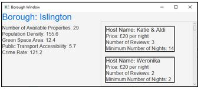

Airbnb Property Viewer
This was a project that was part of one of my university courses. We had to work in a group of 4 students and complete the project for a given deadline.
The program reads data from a csv file and then displays information about it to users. A map showing each borough of London uses a coloring system that displays how many properties are in each borough.
A borough can be clicked on and a new window will open showing more information and specific properties in that borough. Another window shows statistics about the various boroughs and properties from the csv file, such as the most expensive borough and the property best suited for sight seeing.
When a user finds a property they like, they can use a booking form to book a stay at that property.
My team worked on the project for about a month and included a detailed report about the functionality of the program.
Technologies:
- - Java
- - JavaFX
- - FileReader
- - GIT
- - JUnit test
Map of London
Borough Information Window

Find a Property Window
Booking Form

Receipt for Booked Property